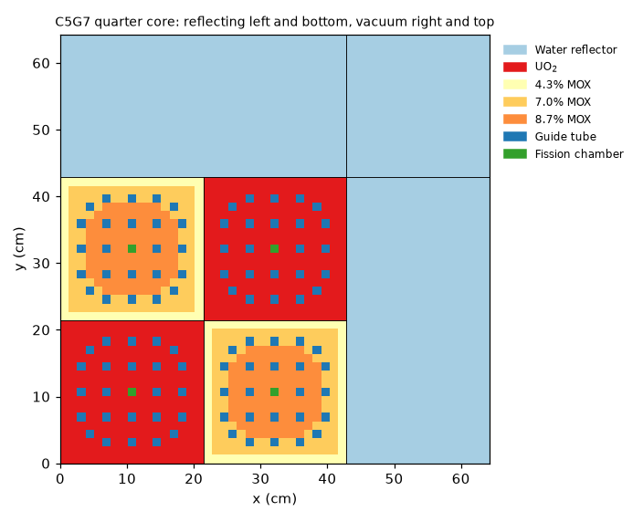
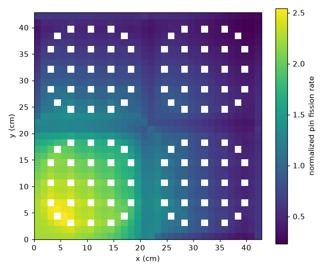

5.4.7. C5G7 Benchmark with CMFD

This tutorial solves the C5G7 benchmark core with heterogeneous pins and CMFD, and maps the pin fission rates. It applies the settings studied in the other tutorials of this series to a mesh on which mixed-material aggregation matters most.
5.4.7.1. The C5G7 model
The C5G7 benchmark [Lewis et al., NEA/NSC/DOC(2003)16] is a quarter core of four 17 x 17 pin assemblies and a water reflector. The UO\(_2\) assemblies sit on the diagonal. The MOX assemblies have three enrichment zones (4.3%, 7.0% and 8.7%). Every assembly has 24 guide tubes and a central fission chamber. The pin pitch is 1.26 cm and the reflector is one assembly (21.42 cm) thick. The core center is in the lower-left corner, so the left and bottom boundaries are reflecting and the right and top boundaries are vacuum. The benchmark provides seven-group cross sections with upscattering in the four thermal groups.
The tutorials in this series use two models of that core.
The pin-homogenized model mixes each fuel pin with its moderator by volume, so every pin cell is one 1.26 cm square mesh cell. It keeps the assembly layout, the MOX zoning, the guide tubes and the reflector, which are what make C5G7 hard for unaccelerated power iteration, and it solves in a few seconds. The option studies use it.
The heterogeneous model in the benchmark tutorial represents each pin by a square of the same area as the round pin, surrounded by moderator.
Both use a 2 x 2 KBA partition, so run the generated scripts with four MPI processes. A light quadrature keeps the run times short. Production calculations need more directions.
5.4.7.2. The heterogeneous model
Each fuel pin is a square of the same area as the 0.54 cm-radius pin (side 0.957 cm), centered in its pin cell and surrounded by moderator, so every pin cell is a 3 x 3 block of mesh cells. The reflector uses 0.63 cm cells. The mesh has 18496 cells, and the quadrature has eight directions. Square pins of equal area keep the material inventory of the benchmark but not its geometry, so the eigenvalue differs from the benchmark’s reference (1.18655, from MCNP with round pins) by about the geometry and quadrature error.
5.4.7.3. Model and measurement code
The next two cells build the C5G7 problem and measure a solve. They are the same in every tutorial of this series. solve() builds a fresh problem for each case, so every solve starts from the same state. It returns the eigenvalue, the number of power iterations (outers), the number of transport sweeps, the number of CMFD coarse cells, the number of skipped CMFD corrections, whether the solve converged, the wall time, and the fission rate of every fuel pin normalized to the average fuel pin.
The wall time covers building the problem, initializing the solver, and the solve. Building the problem is the same in every case.
[ ]:
import math
from pathlib import Path
from mpi4py import MPI
from pyopensn.aquad import GLCProductQuadrature2DXY
from pyopensn.context import Finalize
from pyopensn.fieldfunc import FieldFunctionGridBased
from pyopensn.math import Vector3
from pyopensn.mesh import KBAGraphPartitioner, OrthogonalMeshGenerator
from pyopensn.solver import (
CMFDAcceleration,
DiscreteOrdinatesProblem,
PowerIterationKEigenSolver,
)
from pyopensn.xs import MultiGroupXS
comm = MPI.COMM_WORLD
rank = comm.rank
tutorial_dir = Path(__file__).resolve().parent if "__file__" in globals() else Path.cwd()
xs_dir = next(
path / "test/assets/xs/c5g7"
for path in (tutorial_dir, *tutorial_dir.parents)
if (path / "test/assets/xs/c5g7").is_dir()
)
[ ]:
PITCH = 1.26 # pin pitch (cm)
PIN_RADIUS = 0.54 # fuel pin radius (cm)
ASSEMBLY_PINS = 17
CORE_PINS = 2 * ASSEMBLY_PINS # fuel-assembly pins per side of the quarter core
DOMAIN_PINS = 3 * ASSEMBLY_PINS # including the water reflector
WATER, UO2, MOX_43, MOX_70, MOX_87, GUIDE_TUBE, FISSION_CHAMBER = range(7)
XS_FILES = [
"XS_water",
"XS_UO2",
"XS_4_3pMOX",
"XS_7pMOX",
"XS_8_7pMOX",
"XS_guide_tube",
"XS_fission_chamber",
]
FUEL = (UO2, MOX_43, MOX_70, MOX_87)
GUIDE_TUBES = {
(2, 5), (2, 8), (2, 11), (3, 3), (3, 13), (5, 2), (5, 5), (5, 8), (5, 11), (5, 14),
(8, 2), (8, 5), (8, 11), (8, 14), (11, 2), (11, 5), (11, 8), (11, 11), (11, 14),
(13, 3), (13, 13), (14, 5), (14, 8), (14, 11),
}
# One quarter of the MOX assembly, mirrored about its center row and column.
# 1, 2 and 3 are 4.3%, 7.0% and 8.7% MOX, G is a guide tube and F the fission chamber.
MOX_QUARTER = [
"111111111",
"122222222",
"12222G22G",
"122G23333",
"122233333",
"12G33G33G",
"122333333",
"122333333",
"12G33G33F",
]
MOX_ZONES = {"1": MOX_43, "2": MOX_70, "3": MOX_87}
def pin_material(px, py):
"""Return the material of the pin cell in column px and row py of the domain."""
if px >= CORE_PINS or py >= CORE_PINS:
return WATER
i, j = py % ASSEMBLY_PINS, px % ASSEMBLY_PINS
if (i, j) == (8, 8):
return FISSION_CHAMBER
if (i, j) in GUIDE_TUBES:
return GUIDE_TUBE
if px // ASSEMBLY_PINS == py // ASSEMBLY_PINS:
return UO2
return MOX_ZONES[MOX_QUARTER[min(i, 16 - i)][min(j, 16 - j)]]
def load_cross_sections(homogenized):
"""Load the seven C5G7 materials, mixed with water over the pin cell if homogenized."""
cross_sections = []
for name in XS_FILES:
xs = MultiGroupXS()
xs.LoadFromOpenSn(str(xs_dir / f"{name}.xs"))
cross_sections.append(xs)
if not homogenized:
return cross_sections
fuel_fraction = math.pi * PIN_RADIUS**2 / PITCH**2
water = cross_sections[WATER]
return [water] + [
MultiGroupXS.Combine([(xs, fuel_fraction), (water, 1.0 - fuel_fraction)])
for xs in cross_sections[1:]
]
def make_mesh(homogenized):
"""Build the quarter core on a 2 x 2 KBA partition, so run with four MPI processes."""
if homogenized:
nodes = [PITCH * p for p in range(DOMAIN_PINS + 1)]
else:
side = math.sqrt(math.pi) * PIN_RADIUS # square pin with the area of the round one
gap = 0.5 * (PITCH - side)
nodes = [PITCH * p + offset for p in range(CORE_PINS) for offset in (0.0, gap, gap + side)]
nodes += [PITCH * (CORE_PINS + 0.5 * k) for k in range(2 * ASSEMBLY_PINS + 1)]
cut = PITCH * ASSEMBLY_PINS
mesh = OrthogonalMeshGenerator(
node_sets=[nodes, nodes],
partitioner=KBAGraphPartitioner(nx=2, ny=2, xcuts=[cut], ycuts=[cut]),
).Execute()
mesh.SetOrthogonalBoundaries()
def block_id(centroid, old_block_id):
px, py = int(centroid.x // PITCH), int(centroid.y // PITCH)
if not homogenized:
local_x, local_y = centroid.x - px * PITCH, centroid.y - py * PITCH
if not (gap < local_x < gap + side and gap < local_y < gap + side):
return WATER
return pin_material(px, py)
mesh.SetBlockIDFromFunction(block_id)
return mesh
def make_problem(
homogenized=True,
n_azimuthal=4,
group_ranges=((0, 6),),
inner_linear_method="classic_richardson",
l_max_its=4,
adjoint=False,
verbose=False,
):
"""Build the C5G7 quarter-core transport problem."""
cross_sections = load_cross_sections(homogenized)
quadrature = GLCProductQuadrature2DXY(
n_polar=2, n_azimuthal=n_azimuthal, scattering_order=0
)
problem = DiscreteOrdinatesProblem(
mesh=make_mesh(homogenized),
num_groups=7,
groupsets=[
{
"groups_from_to": group_range,
"angular_quadrature": quadrature,
"inner_linear_method": inner_linear_method,
"l_max_its": l_max_its,
"l_abs_tol": 1.0e-10,
}
for group_range in group_ranges
],
xs_map=[{"block_ids": [m], "xs": xs} for m, xs in enumerate(cross_sections)],
boundary_conditions=[
{"name": "xmin", "type": "reflecting"},
{"name": "ymin", "type": "reflecting"},
],
options={
"adjoint": adjoint,
"use_precursors": False,
"power_default_kappa": 1.0,
"verbose_inner_iterations": False,
"verbose_outer_iterations": verbose,
},
)
return problem, cross_sections
[ ]:
def pin_fission_rates(problem, cross_sections):
"""Return the fission rate of every fuel pin, normalized to the average fuel pin.
Each pin center is the center of a rectangular cell, where the bilinear PWLD flux equals
its cell average.
"""
pins = [
(px, py)
for py in range(CORE_PINS)
for px in range(CORE_PINS)
if pin_material(px, py) in FUEL
]
points = [Vector3((px + 0.5) * PITCH, (py + 0.5) * PITCH, 0.0) for px, py in pins]
flux = FieldFunctionGridBased.GetPointValues(problem.GetScalarFluxFieldFunction(), points)
rates = []
for n, (px, py) in enumerate(pins):
sigma_f = cross_sections[pin_material(px, py)].sigma_f
rates.append(sum(sigma_f[g] * flux[g][n][0] for g in range(len(sigma_f))))
mean = sum(rates) / len(rates)
return {pin: rate / mean for pin, rate in zip(pins, rates)}
def solve(label, cmfd=None, k_tol=1.0e-7, max_iters=400, **problem_options):
"""Build a fresh problem, solve it with power iteration, and return the metrics.
cmfd holds the CMFDAcceleration options. Without it the power iteration is unaccelerated.
"""
comm.Barrier()
start = MPI.Wtime()
problem, cross_sections = make_problem(**problem_options)
acceleration = None
solver_options = {"problem": problem, "k_tol": k_tol, "max_iters": max_iters}
if cmfd is not None:
acceleration = CMFDAcceleration(problem=problem, **cmfd)
solver_options["acceleration"] = acceleration
solver = PowerIterationKEigenSolver(**solver_options)
solver.Initialize()
solver.Execute()
seconds = comm.allreduce(MPI.Wtime() - start, op=MPI.MAX)
return {
"label": label,
"k": solver.GetEigenvalue(),
"outers": solver.GetNumPowerIterations(),
"sweeps": solver.GetNumSweeps(),
"converged": solver.IsConverged(),
"coarse_cells": acceleration.GetNumCoarseCells() if acceleration else 0,
"skipped": acceleration.GetNumSkippedCorrections() if acceleration else 0,
"seconds": seconds,
"pins": pin_fission_rates(problem, cross_sections),
}
def report(results, k_reference, pin_reference=None):
"""Print one row per solve and one stable key per metric for the regression tests."""
if rank != 0:
return
header = f"{'case':<34}{'k_eff':>12}{'k error':>10}{'outers':>8}{'sweeps':>8}"
header += f"{'coarse':>8}{'skips':>6}{'conv':>5}"
header += f"{'pin error':>10}" if pin_reference else ""
print(header + f"{'time (s)':>10}")
for r in results:
k_error = r["k"] - k_reference
row = f"{r['label']:<34}{r['k']:>12.8f}{k_error:>10.1e}{r['outers']:>8}{r['sweeps']:>8}"
row += f"{r['coarse_cells']:>8}{r['skipped']:>6}{int(r['converged']):>5}"
if pin_reference:
row += f"{max_pin_error(r, pin_reference):>10.1e}"
print(row + f"{r['seconds']:>10.2f}")
for r in results:
key = r["label"].replace(" ", "_")
print(f"{key} k-effective error={r['k'] - k_reference:.6e}")
print(f"{key} converged={int(r['converged'])}")
def max_pin_error(result, pin_reference):
"""Largest difference of the normalized pin fission rates from the reference."""
return max(abs(result["pins"][pin] - value) for pin, value in pin_reference.items())
5.4.7.4. Solve with CMFD
Every fuel square is one mesh cell surrounded by moderator cells. With single-material aggregation, each of the more than 1150 fuel, guide-tube and fission-chamber cells would be a coarse cell on its own. Mixed-material aggregates of up to 16 cells, about two pin cells, follow the pins instead. The other settings are those of the basics tutorial.
The reference eigenvalue of this model, 1.185125978, comes from a CMFD solve with tolerances far tighter than the ones used here.
[ ]:
K_REFERENCE = 1.185125978
K_BENCHMARK = 1.18655
result = solve(
"C5G7 heterogeneous",
cmfd={
"aggregation_size": 16,
"allow_mixed_material_aggregation": True,
"group_aggregation_size": 4,
"update_wgs_max_its": 4,
},
homogenized=False,
n_azimuthal=8,
)
report([result], K_REFERENCE)
if rank == 0:
difference_pcm = 1e5 * (result["k"] - K_BENCHMARK)
print(f"C5G7 difference from the benchmark eigenvalue (pcm)={difference_pcm:.1f}")
5.4.7.5. Compare with the benchmark
The benchmark reports pin fission rates normalized to an average of one over its 1056 fuel pins, and assembly powers as the sums of those rates over each assembly. Its MCNP reference gives 492.8 for the inner UO\(_2\) assembly, 211.7 for each MOX assembly and 139.1 for the outer UO\(_2\) assembly, with a maximum pin fission rate of 2.498 and a minimum of 0.232. These published assembly values sum to 1055.3 rather than 1056, with the MOX value counted for both MOX assemblies. The comparison uses them as published. The difference of 0.07% is small compared with the differences below.
[ ]:
BENCHMARK = {
"inner UO2 assembly": 492.8,
"MOX assembly": 211.7,
"outer UO2 assembly": 139.1,
"maximum pin": 2.498,
"minimum pin": 0.232,
}
pins = result["pins"]
def assembly_power(ax, ay):
return sum(rate for (px, py), rate in pins.items() if (px // 17, py // 17) == (ax, ay))
computed = {
"inner UO2 assembly": assembly_power(0, 0),
"MOX assembly": 0.5 * (assembly_power(1, 0) + assembly_power(0, 1)),
"outer UO2 assembly": assembly_power(1, 1),
"maximum pin": max(pins.values()),
"minimum pin": min(pins.values()),
}
if rank == 0:
print(f"{'quantity':<22}{'computed':>10}{'benchmark':>11}{'difference':>12}")
for name, value in computed.items():
difference = value / BENCHMARK[name] - 1.0
print(f"{name:<22}{value:>10.3f}{BENCHMARK[name]:>11.3f}{100 * difference:>11.2f}%")
print(f"C5G7 {name} relative difference={difference:.6e}")
print(f"C5G7 maximum pin location={max(pins, key=pins.get)}")
The assembly powers agree with the benchmark to about one percent and the extreme pin fission rates to about two percent, although the model uses square pins and only eight directions. The eigenvalue differs by about 140 pcm. The CMFD eigenvalue agrees with the tightly converged reference of the same model to about 1e-8, so the eigenvalue difference comes from the model. The pin fission rates are not compared with an unaccelerated solve of the same model here, so this comparison alone does not separate model error from iteration error in them.
5.4.7.6. Pin fission rates
The inner UO\(_2\) assembly produces almost half of the power, and the peak is near the core center. Each MOX assembly produces less than half as much, because its fuel absorbs thermal neutrons strongly and its outer ring has the lowest enrichment. The outer UO\(_2\) assembly, next to the reflector on two sides, produces the least.
The following code, kept in Markdown so the regression test writes no files, plots the map with matplotlib.
import matplotlib.pyplot as plt
import numpy as np
pin_map = np.full((CORE_PINS, CORE_PINS), np.nan)
for (px, py), rate in pins.items():
pin_map[py, px] = rate
plt.imshow(pin_map, origin="lower", extent=[0, CORE_PINS * PITCH] * 2)
plt.colorbar(label="normalized pin fission rate")
plt.xlabel("x (cm)")
plt.ylabel("y (cm)")
plt.savefig("c5g7_pin_fission_rates.png", dpi=150)

Normalized fission rate of every fuel pin of the quarter core. Guide tubes and fission chambers are blank. The core center is in the lower-left corner.
[ ]:
assert result["converged"]
assert result["skipped"] == 0
assert abs(result["k"] - K_REFERENCE) < 1.0e-6
assert len(pins) == 1056
assert abs(sum(pins.values()) / len(pins) - 1.0) < 1.0e-12
for name, value in computed.items():
assert abs(value / BENCHMARK[name] - 1.0) < 0.03, name
5.4.7.7. Finalize (for Jupyter Notebook only)
In script mode, PyOpenSn handles finalization automatically. In a Jupyter kernel, finalize OpenSn before MPI.
[ ]:
if "opensn_console" not in globals():
from IPython import get_ipython
if get_ipython() is not None:
Finalize()
MPI.Finalize()